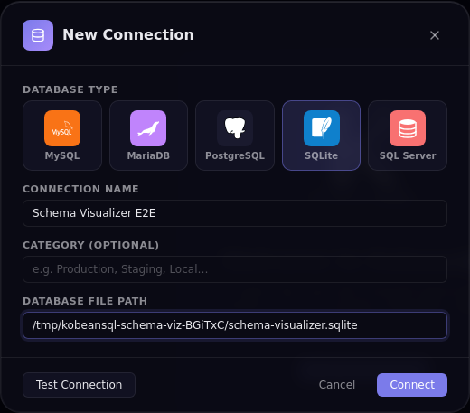
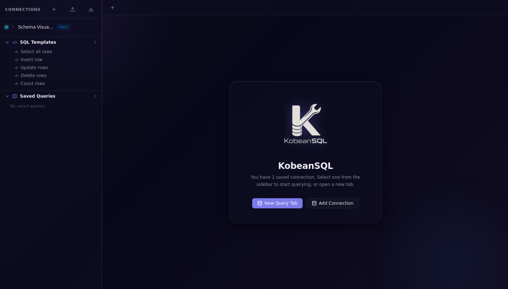
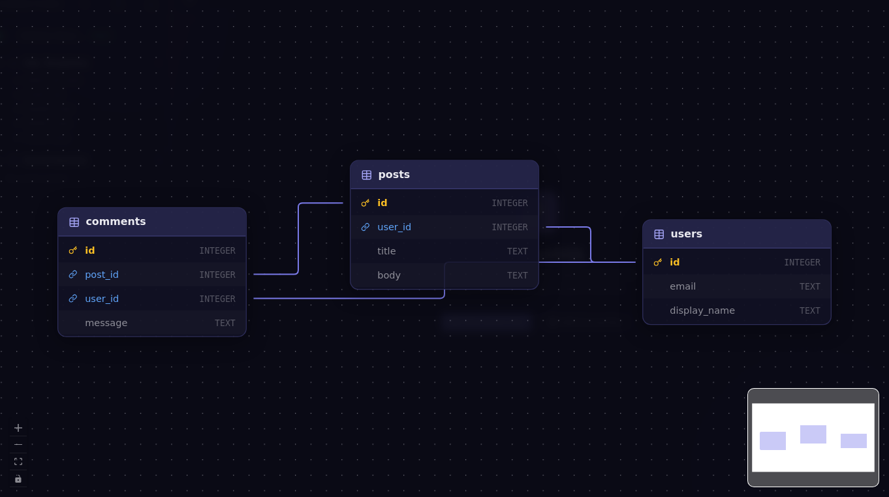
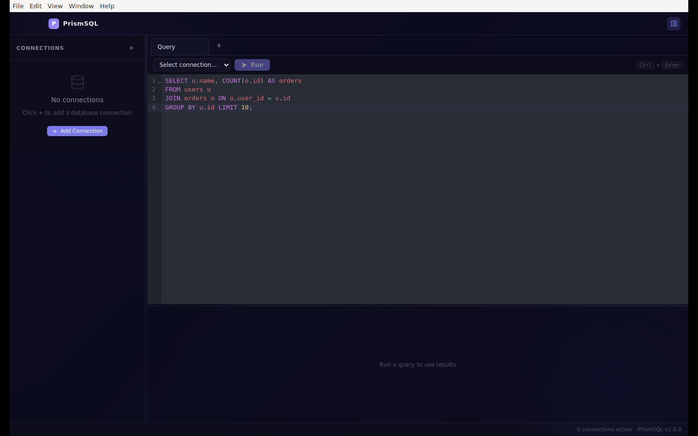

Beautiful SQL
for every database
KobeanSQL is a modern desktop SQL client with an Apple-inspired glassmorphism interface. Connect to MySQL, MariaDB, PostgreSQL, SQLite, SQL Server, and MongoDB. Visualize schema relationships and use local-only AI workflows.


Everything you need,
nothing you don't.
Built from the ground up for developers who care about their tools. Fast, beautiful, and open source.
Apple Glassmorphism UI
Frosted-glass panels, backdrop blur, and vibrancy — a UI that looks as good as it works. Dark and light themes included.
Multi-Database Support
Connect to MySQL, MariaDB, PostgreSQL, SQLite, SQL Server, and MongoDB from the same app with native drivers.
Multi-Tab Query Editor
CodeMirror 6 SQL editor with syntax highlighting, SQL formatting, built-in SQL templates, and keyboard shortcuts.
Schema Browser
Expandable tree: connections → databases → tables/views → columns with types and PK flags. Click any table to query it instantly.
Schema Visualizer
Open an interactive ER diagram powered by React Flow + Dagre to inspect table relationships and foreign keys at a glance.
Results Grid
Sortable columns, global filter, per-column filtering, CSV export, and row count + query duration in the status bar.
MongoDB Read + Write
Run MongoDB find / aggregate queries and write operations such as insertOne, updateOne, deleteMany, and runCommand.
Saved Queries
Save, name, and re-open any query at any time. All queries are stored locally — no cloud account needed.
Keyboard-First
⌘ Enter to run, ⌘ T for new tab. Resize panes with drag handles. Everything is reachable from the keyboard.
Query History
Review previously executed statements in the in-app history panel and bring queries back into your workflow faster.
Resilient Panels
Query History and Schema Visualizer use guarded portal rendering to prevent renderer crashes when modal targets are unavailable.
Connection Import/Export
Move connection profiles between machines with built-in import and export actions directly from the sidebar.
Smart Defaults
Configure global query row limits in Settings so table browsing stays fast and safe for large datasets.
Local-Only AI Assistant
Generate, explain, and optimize SQL with local providers such as Ollama and OpenAI-compatible local servers - no cloud AI calls.
Fully Local
No accounts, no cloud sync, no telemetry. Your connection credentials and queries never leave your machine.
Cross-Platform
macOS, Windows, and Linux — all supported and built in CI. Download a pre-built release or compile from source.
One app.
All your databases.
KobeanSQL uses native, battle-tested drivers for every database it supports.
MySQL
mysql2 driver
:3306MariaDB
mysql2 driver
:3306PostgreSQL
pg driver
:5432SQLite
better-sqlite3
fileSQL Server
mssql driver
:1433MongoDB
mongodb driver
:27017Up and running
in minutes.
Download a pre-built release for your platform, or build from source.
Option 1 — Download a release
Option 2 — Build from source
Keyboard shortcuts
Getting things done,
step by step.
A complete walkthrough from opening a connection to exporting query results.
Step 1 — Connect to a Database

Click + Add Connection in the sidebar to open the Connection Manager. Fill in the connection type, host, port, database, username, and password. Click Test Connection to verify credentials before saving — a green banner confirms success, a red banner shows the exact driver error.
| Field | Description |
|---|---|
Name | Human-readable label (e.g. prod-postgres-readonly) |
Type | Database engine: MySQL / MariaDB / PostgreSQL / SQLite / SQL Server / MongoDB |
Host | Hostname or IP address |
Port | Default ports are pre-filled per engine |
Database | Default database / schema |
User / Password | Credentials — password is encrypted at rest via safeStorage |
File (SQLite) | Absolute path to .sqlite / .db file, or blank for in-memory |
Step 2 — Explore the Schema

Once connected, the sidebar populates with the full schema tree. Expand any table to inspect column names, data types, and primary-key indicators. Click the Schema Visualizer button to open an interactive ER diagram of the selected database.

Step 3 — Write & Execute Queries

Select a connection and open a query tab
Click a saved connection in the sidebar to connect. Press ⌘ T / Ctrl T to open a new query tab — each tab maintains independent editor and result state.
Write SQL with autocompletion
The CodeMirror 6 editor offers SQL syntax highlighting, table/column name autocompletion, bracket matching, and keyboard shortcuts. Press ⌘ Enter / Ctrl Enter to run the current query or selected SQL.
Use the KobeanSQL DSL for boilerplate
Click the </> toolbar button, choose a statement type (Select / Call Procedure / Call Function), enter an object name, and click Insert SQL. The DSL handles dialect-specific quoting and TOP vs LIMIT syntax automatically.
Format and review results
Click Format to auto-format SQL via sql-formatter. Results appear below with sortable columns, a global text filter, row count, and query duration.
Step 4 — Export Data
After executing a query, click Export CSV in the results panel toolbar. An OS-native save-file dialog opens — choose a location and filename. The full result set (all rows, all columns) is written as a UTF-8 CSV file. For bulk SQL dumps use your database's native CLI tools (mysqldump, pg_dump, sqlite3 .dump).
How KobeanSQL
is built.
A strictly sandboxed Electron app with contextIsolation: true and nodeIntegration: false — the renderer has no direct access to Node.js.
Main Process
Opens and manages all database TCP/IP connections via ConnectionManager. Encrypts and persists connection configs using safeStorage. Registers all IPC handlers (ipcMain.handle) and dispatches AI tasks to local providers.
Renderer Process
All UI rendering via React 18. Application state managed by Zustand + Immer. Calls window.db.* methods exposed by the preload bridge — never talking directly to database drivers.
Core Tech Stack
| Layer | Technology | Version |
|---|---|---|
| Shell | Electron | 29 |
| Build | electron-vite + Vite | 2 / 5 |
| UI | React + TypeScript | 18 / 5 |
| State | Zustand + Immer | 4 / 10 |
| SQL editor | CodeMirror 6 (@uiw/react-codemirror) | 6 |
| Data grid | @tanstack/react-table | 8 |
| Schema diagram | @xyflow/react + @dagrejs/dagre | 12 / 3 |
| DB drivers | mysql2, pg, better-sqlite3, mssql, mongodb | — |
| Tests | Vitest + Playwright | 1 / 1 |
| Packaging | electron-builder | 24 |
Project Structure
AI that never
leaves your machine.
Generate, explain, and optimize SQL using a local Ollama or OpenAI-compatible server. Zero cloud calls — prompts and SQL never leave your machine.
Supported Providers
| Provider | Default Endpoint | Examples |
|---|---|---|
| Ollama | http://127.0.0.1:11434 | Ollama (any model) |
| OpenAI-compatible | http://127.0.0.1:1234/v1 | LM Studio, LocalAI, llama.cpp server |
Setup
Start your local provider
Launch Ollama (ollama serve) or an OpenAI-compatible server (e.g. LM Studio) and pull or load at least one model.
Configure with environment variables (optional)
Override the defaults by setting variables before launching KobeanSQL:
| Variable | Default | Description |
|---|---|---|
KOBEANSQL_AI_PROVIDER | ollama | ollama or openai-compatible |
KOBEANSQL_OLLAMA_URL | http://127.0.0.1:11434 | Ollama base URL (loopback only) |
KOBEANSQL_OLLAMA_MODEL | model-dependent | Model name to use with Ollama |
KOBEANSQL_OPENAI_URL | http://127.0.0.1:1234/v1 | OpenAI-compat base URL (loopback only) |
KOBEANSQL_OPENAI_MODEL | model-dependent | Model name for OpenAI-compat server |
Use the AI buttons in the Query Editor toolbar
AI Generate — describe what you want in plain English; the model returns SQL. AI Explain — the model explains your SQL. AI Optimize — get an improved query with reasoning.
Dialect-aware SQL
from a click.
The KobeanSQL DSL generates correct, dialect-specific SQL so you never need to remember whether SQL Server uses [brackets] or TOP.
| Dialect | Identifier quoting | Row limit syntax |
|---|---|---|
| SQL Server | [identifier] | SELECT TOP n * FROM … |
| MySQL / MariaDB | `identifier` | SELECT * FROM … LIMIT n |
| PostgreSQL / SQLite | "identifier" | SELECT * FROM … LIMIT n |
</> in the toolbar → choose statement type (Select / Call Procedure / Call Function) → enter the object name → review the live SQL preview → click Insert SQL.
Move connections
between machines.
Back up or share your connection list with the built-in import and export actions directly from the sidebar header.
Export
Opens a native save dialog. Defaults to omitting passwords for safe sharing with teammates. Output is a versioned JSON file: { "version": 1, "connections": […] }
Import
Accepts the versioned export format or a plain ConnectionConfig[] array. Same-ID entries are replaced; same-fingerprint entries (type + host + port + user + database) are skipped as duplicates; invalid records are skipped and counted.
Credentials encrypted
by your OS.
KobeanSQL uses Electron's safeStorage API to encrypt passwords before writing them to disk — backed by your OS keychain.
| Platform | Encryption backend |
|---|---|
| macOS | macOS Keychain Services (AES-256 with login-keychain-derived key) |
| Windows | DPAPI (Data Protection API — tied to the Windows user account) |
| Linux | libsecret (GNOME Keyring / KWallet); falls back to password-derived key |
Best Practices
🔑 Use a dedicated read-only user
Never connect with root / sa / postgres superuser accounts for routine querying. Create a read-only database user for KobeanSQL.
📤 Export connections without passwords
When sharing connection backups with teammates, the export dialog defaults to includePasswords = false. Passwords are stripped from the JSON output.
🔒 SSH tunneling
KobeanSQL has no built-in SSH tunnel UI. Use OS port-forwarding before connecting: ssh -L 127.0.0.1:5433:db.internal:5432 user@bastion -N. Always bind to 127.0.0.1, not 0.0.0.0.
🔄 Rotate credentials regularly
Treat connections.json (in your OS user-data directory) as sensitive. It contains encrypted passwords bound to your OS user account.
Common issues
and fixes.
Quick solutions for the most frequently encountered problems.
🪟 White / blank screen on startup
The renderer failed to load. Open DevTools (F12 in development) and check for errors. In production, inspect the log file for [error] lines. On Linux, ensure libgtk-3-0, libnotify4, and libnss3 are installed.
🍎 "KobeanSQL is damaged and can't be opened" on macOS
A Gatekeeper quarantine flag applied to apps not notarized. The app is not damaged. Run: xattr -cr /Applications/KobeanSQL.app
🐌 Query result freezes with large datasets
KobeanSQL renders the full result set in the DOM. For very large queries, set a conservative row limit in Settings → Query Limit (default: 100 rows, max: 10,000). Use WHERE, LIMIT / TOP, and pagination in your SQL.
🔧 better-sqlite3 fails after Electron upgrade
Native Node addons must be recompiled against the Electron version they run in. Run: npm run rebuild:sqlite
📂 Log file locations
macOS: ~/Library/Logs/KobeanSQL/main.log
Windows: %APPDATA%\KobeanSQL\logs\main.log
Linux: ~/.config/KobeanSQL/logs/main.log
Shortcut: click the bug icon 🐛 in the status bar to open the logs folder.
Your data stays
on your machine.
KobeanSQL was built with a strict privacy-first philosophy. Here's exactly what happens with your data.
No personal data collected
KobeanSQL does not collect, transmit, or store any personal data on external servers. There are no analytics services, telemetry pipelines, or crash-reporting integrations included in the app.
Local-only storage
Connections, saved queries, and settings are stored in your operating system's user-data directory. Passwords are encrypted with OS-backed secure storage when available, and data is never synced by KobeanSQL.
Controlled network traffic
Outbound traffic is limited to endpoints you explicitly configure: your database hosts, an optional local AI provider endpoint, and (if enabled) GitHub Releases metadata checks for app updates. KobeanSQL does not send telemetry or analytics data.
AI stays local
AI features support only local providers (Ollama or OpenAI-compatible local servers). KobeanSQL does not send prompts or SQL text to cloud AI providers.
Fully open source
You can audit every line of code on GitHub. If you find anything that concerns you, please open an issue.
MIT License
KobeanSQL is released under the MIT License. You are free to use, modify, and distribute it for any purpose, including commercial use.
Join the project.
Contributions are welcome! Please read CONTRIBUTING.md before opening a PR.
Quick Start
PR Title Conventions
This project uses Conventional Commits for automatic semantic versioning. All PR titles must follow:
<type>(<scope>): <short description>
| Type | Triggers |
|---|---|
fix | patch release |
feat | minor release |
feat! | major release |
docs / chore / refactor / test / ci | no release |
semantic-release reads. A CI workflow validates the title format before merge is allowed.
Issue Reporting
When filing a bug, include: KobeanSQL version, OS and version, database engine and version, relevant log lines (redacted), and steps to reproduce.
Open an issue →
Built on solid
foundations.
KobeanSQL uses the best available tools for every layer of the stack.